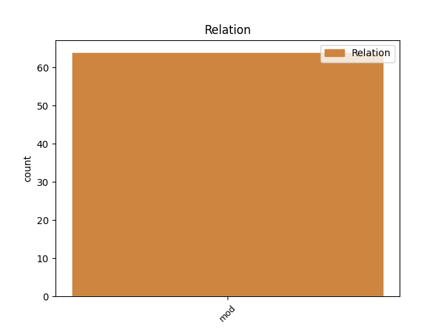
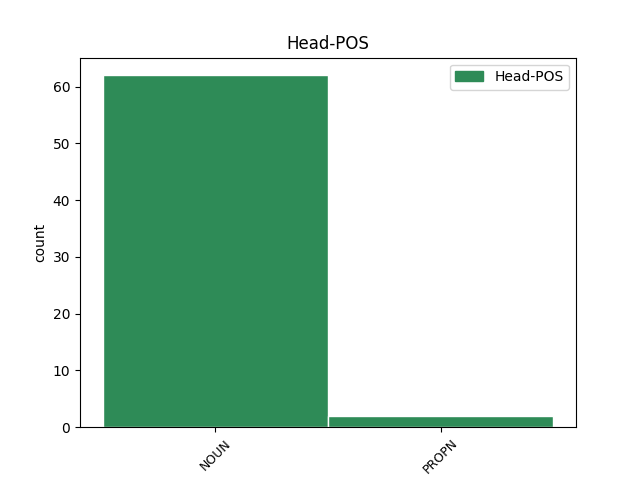
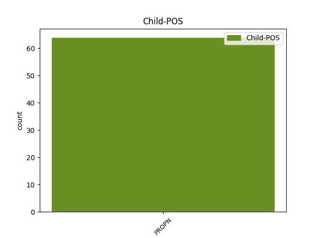

Distribution of features within this leaf



Agreement Rules sorted by frequency.
- When the dependent token is the modifer(mod) of the head token, and the dependent token is PROPN.
1 (4) _ _ _ _ 0 _ _ _
2 Gach _ _ _ _ 0 _ _ _
3 rialachán _ _ _ _ 0 _ _ _
4 a _ _ _ _ 0 _ _ _
5 déanfar _ _ _ _ 0 _ _ _
6 fén _ _ _ _ 0 _ _ _
7 alt _ _ _ _ 0 _ _ _
8 so _ _ _ _ 0 _ _ _
9 leagfar _ _ _ _ 0 _ _ _
10 é _ _ _ _ 0 _ _ _
11 fé _ _ _ _ 0 _ _ _
12 bhráid bráid NOUN Noun Case=NomAcc|Form=Len|Gender=Fem|Number=Sing 0 _ _ _
13 gach _ _ _ _ 0 _ _ _
14 Tighe Tighe PROPN Noun Case=NomAcc|Gender=Masc|Number=Sing 12 mod _ _
15 den _ _ _ _ 0 _ _ _
16 Oireachtas _ _ _ _ 0 _ _ _
17 chó _ _ _ _ 0 _ _ _
18 luath _ _ _ _ 0 _ _ _
19 agus _ _ _ _ 0 _ _ _
20 is _ _ _ _ 0 _ _ _
21 féidir _ _ _ _ 0 _ _ _
22 é _ _ _ _ 0 _ _ _
23 tar _ _ _ _ 0 _ _ _
24 éis _ _ _ _ 0 _ _ _
25 a _ _ _ _ 0 _ _ _
26 dhéanta _ _ _ _ 0 _ _ _
27 agus _ _ _ _ 0 _ _ _
28 má _ _ _ _ 0 _ _ _
29 dhineann _ _ _ _ 0 _ _ _
30 aon _ _ _ _ 0 _ _ _
31 Tigh _ _ _ _ 0 _ _ _
32 acu _ _ _ _ 0 _ _ _
33 san _ _ _ _ 0 _ _ _
34 laistigh _ _ _ _ 0 _ _ _
35 den _ _ _ _ 0 _ _ _
36 lá _ _ _ _ 0 _ _ _
37 is _ _ _ _ 0 _ _ _
38 fiche _ _ _ _ 0 _ _ _
39 a _ _ _ _ 0 _ _ _
40 shuidhfidh _ _ _ _ 0 _ _ _
41 an _ _ _ _ 0 _ _ _
42 Tigh _ _ _ _ 0 _ _ _
43 sin _ _ _ _ 0 _ _ _
44 ina _ _ _ _ 0 _ _ _
45 dhiaidh _ _ _ _ 0 _ _ _
46 sin _ _ _ _ 0 _ _ _
47 rún _ _ _ _ 0 _ _ _
48 do _ _ _ _ 0 _ _ _
49 rith _ _ _ _ 0 _ _ _
50 ag _ _ _ _ 0 _ _ _
51 cur _ _ _ _ 0 _ _ _
52 an _ _ _ _ 0 _ _ _
53 rialacháin _ _ _ _ 0 _ _ _
54 sin _ _ _ _ 0 _ _ _
55 ar _ _ _ _ 0 _ _ _
56 nea-mbrí _ _ _ _ 0 _ _ _
57 beidh _ _ _ _ 0 _ _ _
58 an _ _ _ _ 0 _ _ _
59 rialachán _ _ _ _ 0 _ _ _
60 san _ _ _ _ 0 _ _ _
61 ar _ _ _ _ 0 _ _ _
62 nea-mbrí _ _ _ _ 0 _ _ _
63 dá _ _ _ _ 0 _ _ _
64 réir _ _ _ _ 0 _ _ _
65 sin _ _ _ _ 0 _ _ _
66 ach _ _ _ _ 0 _ _ _
67 beidh _ _ _ _ 0 _ _ _
68 san _ _ _ _ 0 _ _ _
69 gan _ _ _ _ 0 _ _ _
70 dochar _ _ _ _ 0 _ _ _
71 do _ _ _ _ 0 _ _ _
72 dhleathacht _ _ _ _ 0 _ _ _
73 éinní _ _ _ _ 0 _ _ _
74 a _ _ _ _ 0 _ _ _
75 dineadh _ _ _ _ 0 _ _ _
76 roimhe _ _ _ _ 0 _ _ _
77 sin _ _ _ _ 0 _ _ _
78 fén _ _ _ _ 0 _ _ _
79 rialachán _ _ _ _ 0 _ _ _
80 san _ _ _ _ 0 _ _ _
81 . _ _ _ _ 0 _ _ _
Disagree Examples:
1 Tugadh _ _ _ _ 0 _ _ _
2 thart _ _ _ _ 0 _ _ _
3 ar _ _ _ _ 0 _ _ _
4 phríomhfhoirgneamh _ _ _ _ 0 _ _ _
5 poiblí _ _ _ _ 0 _ _ _
6 an _ _ _ _ 0 _ _ _
7 Ionaid _ _ _ _ 0 _ _ _
8 muid _ _ _ _ 0 _ _ _
9 agus _ _ _ _ 0 _ _ _
10 thug _ _ _ _ 0 _ _ _
11 Ihab _ _ _ _ 0 _ _ _
12 , _ _ _ _ 0 _ _ _
13 lena _ _ _ _ 0 _ _ _
14 chuid cuid NOUN Noun Case=NomAcc|Form=Len|Gender=Fem|Number=Sing 0 _ _ _
15 Araibise Araibise PROPN Noun Case=Gen|Gender=Masc|Number=Sing 14 mod _ _
16 blasta _ _ _ _ 0 _ _ _
17 ( _ _ _ _ 0 _ _ _
18 agus _ _ _ _ 0 _ _ _
19 Pól _ _ _ _ 0 _ _ _
20 as _ _ _ _ 0 _ _ _
21 Gaeilge _ _ _ _ 0 _ _ _
22 ) _ _ _ _ 0 _ _ _
23 cuntas _ _ _ _ 0 _ _ _
24 dúinn _ _ _ _ 0 _ _ _
25 ar _ _ _ _ 0 _ _ _
26 bhunú _ _ _ _ 0 _ _ _
27 an _ _ _ _ 0 _ _ _
28 ionaid _ _ _ _ 0 _ _ _
29 i _ _ _ _ 0 _ _ _
30 gCluain _ _ _ _ 0 _ _ _
31 Sceach _ _ _ _ 0 _ _ _
32 , _ _ _ _ 0 _ _ _
33 an _ _ _ _ 0 _ _ _
34 méid _ _ _ _ 0 _ _ _
35 áiseanna _ _ _ _ 0 _ _ _
36 éagsúla _ _ _ _ 0 _ _ _
37 atá _ _ _ _ 0 _ _ _
38 ar _ _ _ _ 0 _ _ _
39 fáil _ _ _ _ 0 _ _ _
40 ann _ _ _ _ 0 _ _ _
41 ( _ _ _ _ 0 _ _ _
42 ionad _ _ _ _ 0 _ _ _
43 spóirt _ _ _ _ 0 _ _ _
44 , _ _ _ _ 0 _ _ _
45 scoil _ _ _ _ 0 _ _ _
46 náisiúnta _ _ _ _ 0 _ _ _
47 , _ _ _ _ 0 _ _ _
48 bialann _ _ _ _ 0 _ _ _
49 , _ _ _ _ 0 _ _ _
50 siopa _ _ _ _ 0 _ _ _
51 , _ _ _ _ 0 _ _ _
52 srl. _ _ _ _ 0 _ _ _
53 ) _ _ _ _ 0 _ _ _
54 . _ _ _ _ 0 _ _ _
1 Má _ _ _ _ 0 _ _ _
2 tá _ _ _ _ 0 _ _ _
3 boird _ _ _ _ 0 _ _ _
4 stáit _ _ _ _ 0 _ _ _
5 agus _ _ _ _ 0 _ _ _
6 comhlachtai _ _ _ _ 0 _ _ _
7 stáir _ _ _ _ 0 _ _ _
8 in _ _ _ _ 0 _ _ _
9 Éirinn _ _ _ _ 0 _ _ _
10 ag _ _ _ _ 0 _ _ _
11 dul _ _ _ _ 0 _ _ _
12 ag _ _ _ _ 0 _ _ _
13 fógairt _ _ _ _ 0 _ _ _
14 mar _ _ _ _ 0 _ _ _
15 ' _ _ _ _ 0 _ _ _
16 phacáiste _ _ _ _ 0 _ _ _
17 ' _ _ _ _ 0 _ _ _
18 ar _ _ _ _ 0 _ _ _
19 leith _ _ _ _ 0 _ _ _
20 d' _ _ _ _ 0 _ _ _
21 Éirinn _ _ _ _ 0 _ _ _
22 , _ _ _ _ 0 _ _ _
23 má _ _ _ _ 0 _ _ _
24 tá _ _ _ _ 0 _ _ _
25 RTÉ _ _ _ _ 0 _ _ _
26 ag _ _ _ _ 0 _ _ _
27 dul _ _ _ _ 0 _ _ _
28 i _ _ _ _ 0 _ _ _
29 gcomhar _ _ _ _ 0 _ _ _
30 le _ _ _ _ 0 _ _ _
31 Sky _ _ _ _ 0 _ _ _
32 maidir _ _ _ _ 0 _ _ _
33 le _ _ _ _ 0 _ _ _
34 dáileadh _ _ _ _ 0 _ _ _
35 na _ _ _ _ 0 _ _ _
36 mbealach _ _ _ _ 0 _ _ _
37 teilifís teilifís NOUN Noun Case=NomAcc|Gender=Fem|Number=Sing 0 _ _ _
38 Éireannach Éireannach PROPN Noun Case=Gen|Gender=Masc|NounType=Weak|Number=Plur 37 mod _ _
39 ar _ _ _ _ 0 _ _ _
40 bhosca _ _ _ _ 0 _ _ _
41 digiteach _ _ _ _ 0 _ _ _
42 Sky _ _ _ _ 0 _ _ _
43 ar _ _ _ _ 0 _ _ _
44 fud _ _ _ _ 0 _ _ _
45 na _ _ _ _ 0 _ _ _
46 tíre _ _ _ _ 0 _ _ _
47 ( _ _ _ _ 0 _ _ _
48 cinneadh _ _ _ _ 0 _ _ _
49 atá _ _ _ _ 0 _ _ _
50 tar _ _ _ _ 0 _ _ _
51 éis _ _ _ _ 0 _ _ _
52 an-gheit _ _ _ _ 0 _ _ _
53 a _ _ _ _ 0 _ _ _
54 bhaint _ _ _ _ 0 _ _ _
55 as _ _ _ _ 0 _ _ _
56 oifig _ _ _ _ 0 _ _ _
57 an _ _ _ _ 0 _ _ _
58 Aire _ _ _ _ 0 _ _ _
59 de _ _ _ _ 0 _ _ _
60 Valera _ _ _ _ 0 _ _ _
61 , _ _ _ _ 0 _ _ _
62 deirtear _ _ _ _ 0 _ _ _
63 linn _ _ _ _ 0 _ _ _
64 ) _ _ _ _ 0 _ _ _
65 níor _ _ _ _ 0 _ _ _
66 cheart _ _ _ _ 0 _ _ _
67 cur _ _ _ _ 0 _ _ _
68 suas _ _ _ _ 0 _ _ _
69 leis _ _ _ _ 0 _ _ _
70 an _ _ _ _ 0 _ _ _
71 neamhaird _ _ _ _ 0 _ _ _
72 ar _ _ _ _ 0 _ _ _
73 leith _ _ _ _ 0 _ _ _
74 a _ _ _ _ 0 _ _ _
75 dhéananna _ _ _ _ 0 _ _ _
76 meáin _ _ _ _ 0 _ _ _
77 na _ _ _ _ 0 _ _ _
78 Sasasanach _ _ _ _ 0 _ _ _
79 ar _ _ _ _ 0 _ _ _
80 Éirinn _ _ _ _ 0 _ _ _
81 de _ _ _ _ 0 _ _ _
82 ghnáth _ _ _ _ 0 _ _ _
83 . _ _ _ _ 0 _ _ _
1 Ar _ _ _ _ 0 _ _ _
2 fhágaint _ _ _ _ 0 _ _ _
3 slán _ _ _ _ 0 _ _ _
4 agus _ _ _ _ 0 _ _ _
5 beannacht _ _ _ _ 0 _ _ _
6 age _ _ _ _ 0 _ _ _
7 cé cé NOUN Noun Case=NomAcc|Gender=Fem|Number=Sing 0 _ _ _
8 na _ _ _ _ 0 _ _ _
9 Coise Coise PROPN Noun Case=Gen|Gender=Masc|Number=Sing 7 mod _ _
10 an _ _ _ _ 0 _ _ _
11 tráthnóna _ _ _ _ 0 _ _ _
12 aoibhinn _ _ _ _ 0 _ _ _
13 caithiseach _ _ _ _ 0 _ _ _
14 Domhnaigh _ _ _ _ 0 _ _ _
15 seo _ _ _ _ 0 _ _ _
16 dhúinn _ _ _ _ 0 _ _ _
17 , _ _ _ _ 0 _ _ _
18 agus _ _ _ _ 0 _ _ _
19 agena _ _ _ _ 0 _ _ _
20 a _ _ _ _ 0 _ _ _
21 raibh _ _ _ _ 0 _ _ _
22 do _ _ _ _ 0 _ _ _
23 dhaoine _ _ _ _ 0 _ _ _
24 ina _ _ _ _ 0 _ _ _
25 seasamh _ _ _ _ 0 _ _ _
26 ann _ _ _ _ 0 _ _ _
27 , _ _ _ _ 0 _ _ _
28 cé _ _ _ _ 0 _ _ _
29 go _ _ _ _ 0 _ _ _
30 raibh _ _ _ _ 0 _ _ _
31 cuid _ _ _ _ 0 _ _ _
32 mhaith _ _ _ _ 0 _ _ _
33 ann _ _ _ _ 0 _ _ _
34 san _ _ _ _ 0 _ _ _
35 am _ _ _ _ 0 _ _ _
36 gcéanna _ _ _ _ 0 _ _ _
37 , _ _ _ _ 0 _ _ _
38 ní _ _ _ _ 0 _ _ _
39 raibh _ _ _ _ 0 _ _ _
40 cuma _ _ _ _ 0 _ _ _
41 na _ _ _ _ 0 _ _ _
42 hainnise _ _ _ _ 0 _ _ _
43 ná _ _ _ _ 0 _ _ _
44 na _ _ _ _ 0 _ _ _
45 bochtanacht _ _ _ _ 0 _ _ _
46 ar _ _ _ _ 0 _ _ _
47 aon _ _ _ _ 0 _ _ _
48 duine _ _ _ _ 0 _ _ _
49 acu _ _ _ _ 0 _ _ _
50 , _ _ _ _ 0 _ _ _
51 rud _ _ _ _ 0 _ _ _
52 ná _ _ _ _ 0 _ _ _
53 beadh _ _ _ _ 0 _ _ _
54 im _ _ _ _ 0 _ _ _
55 chumas _ _ _ _ 0 _ _ _
56 do _ _ _ _ 0 _ _ _
57 rá _ _ _ _ 0 _ _ _
58 leo _ _ _ _ 0 _ _ _
59 anois _ _ _ _ 0 _ _ _
60 dá _ _ _ _ 0 _ _ _
61 mbeinn _ _ _ _ 0 _ _ _
62 ann _ _ _ _ 0 _ _ _
63 , _ _ _ _ 0 _ _ _
64 comh _ _ _ _ 0 _ _ _
65 fada _ _ _ _ 0 _ _ _
66 lem _ _ _ _ 0 _ _ _
67 thuairim _ _ _ _ 0 _ _ _
68 . _ _ _ _ 0 _ _ _
1 Tugann _ _ _ _ 0 _ _ _
2 an _ _ _ _ 0 _ _ _
3 scannán _ _ _ _ 0 _ _ _
4 seo _ _ _ _ 0 _ _ _
5 léiriú _ _ _ _ 0 _ _ _
6 ar _ _ _ _ 0 _ _ _
7 a _ _ _ _ 0 _ _ _
8 gcaidreamh _ _ _ _ 0 _ _ _
9 lena _ _ _ _ 0 _ _ _
10 chéile _ _ _ _ 0 _ _ _
11 agus _ _ _ _ 0 _ _ _
12 le _ _ _ _ 0 _ _ _
13 muintir muintir NOUN Noun Case=NomAcc|Gender=Fem|Number=Sing 0 _ _ _
14 Kennedy Kennedy PROPN Noun Case=Gen|Form=Len|Gender=Masc|Number=Sing 13 mod _ SpaceAfter=No
15 , _ _ _ _ 0 _ _ _
16 Marilyn _ _ _ _ 0 _ _ _
17 Monroe _ _ _ _ 0 _ _ _
18 , _ _ _ _ 0 _ _ _
19 Sam _ _ _ _ 0 _ _ _
20 Giancano _ _ _ _ 0 _ _ _
21 , _ _ _ _ 0 _ _ _
22 Judith _ _ _ _ 0 _ _ _
23 Cambell _ _ _ _ 0 _ _ _
24 agus _ _ _ _ 0 _ _ _
25 an _ _ _ _ 0 _ _ _
26 FBI _ _ _ _ 0 _ _ _
27 . _ _ _ _ 0 _ _ _
1 Ní _ _ _ _ 0 _ _ _
2 hé _ _ _ _ 0 _ _ _
3 amháin _ _ _ _ 0 _ _ _
4 sin _ _ _ _ 0 _ _ _
5 ach _ _ _ _ 0 _ _ _
6 bhí _ _ _ _ 0 _ _ _
7 de _ _ _ _ 0 _ _ _
8 thoradh _ _ _ _ 0 _ _ _
9 ar _ _ _ _ 0 _ _ _
10 an _ _ _ _ 0 _ _ _
11 dá _ _ _ _ 0 _ _ _
12 bheart _ _ _ _ 0 _ _ _
13 fadbhreathnaitheacha _ _ _ _ 0 _ _ _
14 sin _ _ _ _ 0 _ _ _
15 aige _ _ _ _ 0 _ _ _
16 gur _ _ _ _ 0 _ _ _
17 mhaolaigh _ _ _ _ 0 _ _ _
18 ar _ _ _ _ 0 _ _ _
19 naimhdeas naimhdeas NOUN Noun Case=NomAcc|Gender=Masc|Number=Sing 0 _ _ _
20 na _ _ _ _ 0 _ _ _
21 Fraince Frainc PROPN Noun Case=Gen|Gender=Fem 19 mod _ _
22 don _ _ _ _ 0 _ _ _
23 Eaglais _ _ _ _ 0 _ _ _
24 . _ _ _ _ 0 _ _ _